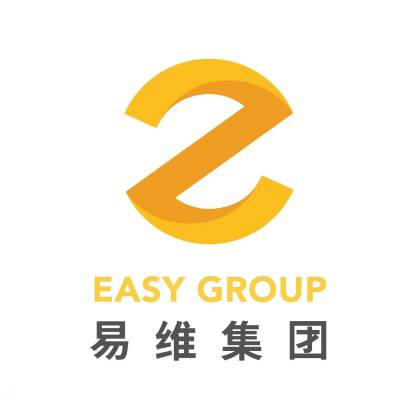
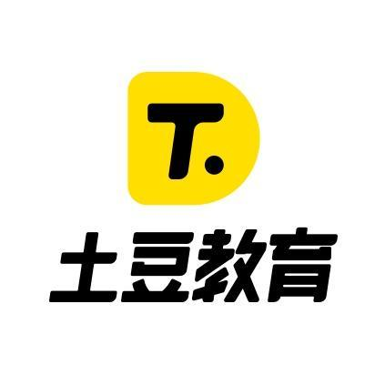
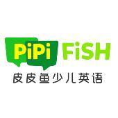

李林
易维路觅（北京）教育科技有限公司 / 资深前端开发工程师
8年工作经验 / 大专 / 27岁
15235676136 c_ommand@163.com
-
2011.06-至今
易维路觅（北京）教育科技有限公司 ／ 技术部资深前端开发工程师
React Electron- 全面负责公司的Web前端技术(包括技术选型、预研、人员培训等);
- 参与产品设计研发;
- 与设计、产品及后台人员沟通,保证产品的质量和开发进度;
- 持续的优化相关的产品的质量、性能、用户体验;
-
2019.10-2021.05
北京治学教育科技有限公司 ／ 技术部前端开发工程师
微信公众平台 小程序 前端开发- 全面负责公司的Web前端技术(包括技术选型、预研、人员培训等);
- 与设计、产品及后台人员沟通,保证产品的质量和开发进度;
- 持续的优化相关的产品的质量、性能、用户体验;
-
2018.01-2019.09
北京吾好科技发展有限公司 ／ 技术部开发工程师
前端开发 egret React- 使用React参与公司web项目开发
- 使用egret引擎搭建课前/课后及课中相关框架
- 配合前端其他同事使用electron + react + egret 完成课件编辑器开发（课中及ai课程）
- 配合开发教学游戏模板/组件
-
2017.08-2018.01
 笨鸟盛世（北京）教育科技有限公司 ／ 技术部
笨鸟盛世（北京）教育科技有限公司 ／ 技术部课件开发专员
canvas 前端开发- 开发完善自研canvas渲染引擎
- 配合.net同事完成windows端课件编辑器
- 利用自研引擎实现课件开发
- 参与研发web端龙骨动画编辑器
-
2016.05-2017.07
北京汉融金汇教育科技有限公司 ／ 技术部web前端开发
Hybrid 前端开发与团队其他成员配合完成官网，公众号及录播金融教育APP开发上线，期间使用angularjs完成工商银行积分商城项目（申度商城）并支持在线客服功能。
-
2014.06-2016.05
果硕教育科技有限公司 ／ 技术部开发工程师
Angular Flash Hybrid独立开发前端相关项目，期间自学了前端及混合开发相关知识，使用falsh as3及angularjs完成了围棋工具，学习站点。利用ionic完成围棋圈社交围棋直播APP，使用php+jq完成微信公众号相关开发
-
电子商务系统 （ 易维路觅（北京）教育科技有限公司 ）
2022.04-至今
基于原有学习平台做出功能增加，支持各业务线配置自己的首页，添加商品（课程，储值，定金），促销活动等，学生可以在新平台完成，课程购买（支持多货币支付场景）并完成上课。
- 用户端完成首页改版、商品查询，购买、购物车、优惠券，储值使用、支持微信，支付宝及信用卡支付等功能
- 后台在本次需求中完成了微前端拆分，将原有后台系统拆分CMS, CRM 以及 电子商务系统三部分；电子商务完成了支持学生端功能所需配置、相关统计数据展示等功能；
-
直播学习平台 （ 易维路觅北京教育科技有限公司 ）
2021.06-至今
- 教师端（PC客户端），功能包含直播课程信息查询，设备检测，直播以及聊天等功能；
- 学生端（web站点），功能以直播，录播，回放，课程物料预览下载等为主；
- 后台（web站点），包含排课，出勤统计，问卷调查，课程物料编辑等以课程服务及学生，老师上课信息统计等功能
- 教师端完成了重构，解决了原有渲染进程与主进程通讯混乱，及部分无法通讯的问题，重写直播逻辑，升级相应三方sdk，避免因控制混乱导致的麦克风收音异常，视频流采集中断等问题；
- 学生端完成录播，回放视频加密方式从三方到自研方式的替换，直播添加容错机制；
-
Athena 题库系统 （北京治学教育科技有限公司）
2021.02-至今
1.该项目致力于为用户提供跨平台的答题服务，为教研团队提供所见即所得的题库管理系统
2.项目基础服务：移动端题型组件库，pc端题型组件库，录入/批改组件库以及题库数据处理库
3.应用层包括 app学习中心，pc学习中心，教研录题/批改后台
带领前端3人团队在短期内完成了整个新题库系统及其衍生应用的上线，为公司的pc网站及app完成赋能，为后续扩展其他答题应用打下了基础，提高了后期答题应用的开发效率，缩短了开发周期。
-
皮皮鱼课件编辑器 （北京吾好科技发展有限公司）
2019.02-2019.09
- 帮助教研人员高效开发课程所需课件及创建相关ai课程
- 解放开发人员频繁处理，替换现有组件资源，让开发人员有更多的时间投入到课堂组件的开发中
- 舞台区基于egret引擎实现课件编辑预览，宿主容器基于electron + react 实现数据的本地存储，精确编辑及文件生产导出等.
带领课件开发组成员配合前端同事耗时三个月成功发布window/mac客户端1.0正式版，并协助教研/产品完成课件开发工具的替换。解决开发人员频繁替换资源及与教研人员沟通成本高的问题，提高了教研人员的课件开发效率，为教研人员提供了创建课件其他可能性的空间。
-
I金砖APP （北京汉融金汇教育科技有限公司）
2016.06-2017.04
为金融从业人员提供录播/直播的移动学习平台！
- 在线学习：结构清晰的在线学习路径，轻量化的微课形式。
- 在线测试：基于知识体系的练习和测试，深度理解和掌握知识内容。
- 学习效果数据化：跟踪学习过程，量化学习效果。
配合团队成员完善开发录播/直播功能，带领团队成员完成项目重构，从apicloud云平台到基于ionic框架的切换，并保证了线上的正常运行与发布。
-
中国地质大学(北京)
大专 / 计算机应用技术